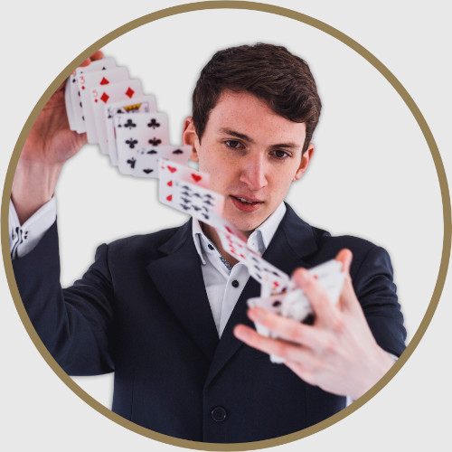
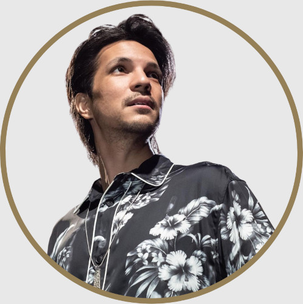
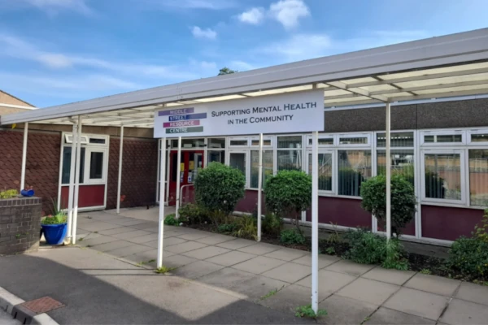

Middle Street Magic invites you to an enchanting evening filled with laughter, connection, and the wonder of magic.
Join us for an enchanting evening of magic and community spirit in Beeston.
Middle Street Magic is all about bringing people together in a fun, collaborative, and magical atmosphere. Prepare to be amazed as local magicians showcase their talents while we connect and celebrate our vibrant community.
The evening kicks off with close-up magic and interactive entertainment in the wonderful foyer cafe space at Middle Street Resource Centre. This is followed by an original show guaranteed to bring you a novel experience of wonder.
Come and join us as we create unforgettable moments and forge new connections - Middle Street Magic promises to be an evening of wonder and camaraderie you won't want to miss!
Limited tickets are available for just £6 by choosing your date below. Don't miss out - get them before they're gone!
Please let us know of any accessibility requirements so that we can ensure everyone feels welcome.
Your hosts for the evening are Andrew Stannard and David Fung. They are local magicians, members of The Magic Circle, and both dedicated to sharing the wonderful world of magic with the community.
They are joined by friends from the local magical community, all helping to share the magic and excitement. We'll all ensure you feel welcome, and enjoy a unique evening of magic and community.
Bringing an intellectual touch to the world of magic and comedy. From his background in programming, his obsession with board games and his charmingly quick wit, Andrew will leave you baffled and laughing in equal measure.
A lifelong student and performer of the art of magic, David brings a collection of polished routines and showmanship to his performances, whether in up-close magic or on the stage. Having performed at a wide range of occasions from corporate events to children’s parties and everything in between, you're sure to be thoroughly entertained when David enters the room.
Middle Street Resource Centre is a mental health focused community centre based in Beeston which offers a variety of mental health support groups, therapeutic one to one support, and volunteering opportunities to promote mental health wellbeing.
At the heart of the centre is a community café which provides a welcoming space for all.
We're so pleased to be able to use this space to bring this event to life, to share magic here and connect the community. The energy and community spirit felt in the building is inspiring and we are sure you will feel this too. The welcoming atmosphere perfectly complements the magic and camaraderie of the event.
Our evening of magic will begin in the bright and open cafe which will act as our foyer and welcome space. The cafe will be open to purchase hot and soft drinks, and you'll be entertained with close-up experiences of magic and mystery.
The stewards will then bring you through, just before 7pm, to the main room to enjoy the magical platform show.
Visit the MSRC website for all the information on getting to the venue, public transport, and parking.
Like many ideas, this project was borne from an impromptu conversation, leading to the equally impromptu commitment to "put on a show"! Initially with the intention to help build and share our work, this quickly evolved:
Through the project, we are engaging and connecting with three local communities - local residents (who we hope would like to see some good magic!), the Middle Street Resource Centre community, and the community of local magicians.
Through these connections, we are exploring new and improved ways to collaborate across communities and constantly listening to evolve and grow together. As a result, we hope to reach new audiences, forge new connections, discover new ways of working together, and platform local performers and organisations.
Thank you!
Middle Street Magic would not be possible without the support of many friends leading up to and during the event - including you as guests and participants in the evening of magic. The following three organisations have also provided significant contribution to make it happen: